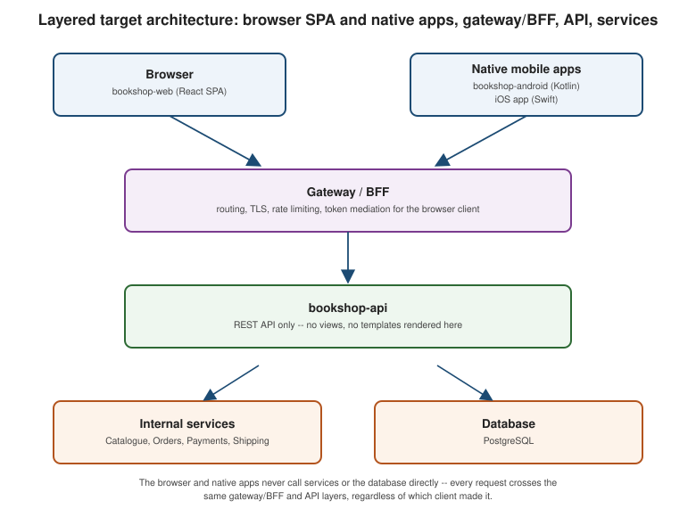

Layering: Isolating Backend and Frontend
|
This content was generated with the assistance of AI and should be verified against the official documentation before being relied on in production. |
Choosing: Monolith or Microservices? is about how many deployables the backend is split into. This page is about a different, largely orthogonal split: how far the presentation layer is separated from the backend, regardless of whether that backend is a monolith or several microservices. Bookshop can be a modular monolith and still expose a clean API to a completely separate frontend, or it can be microservices and still be consumed by a Thymeleaf page rendered on the server — the two decisions compose.
From server-rendered pages to an API-first backend
The classic monolith renders its own HTML: a controller resolves a Thymeleaf template, fills it with data straight from the domain, and returns a finished page. The alternative this page describes is a backend that exposes only an API — REST by default, or GraphQL or gRPC where that comparison’s guidance says one of those fits better — typically sitting behind a gateway (API Gateway and Backends for Frontends covers that piece in depth). Once the backend speaks only API, nothing about it renders a single pixel; rendering becomes the job of whichever client calls it:
-
Completely separate web frontends — a React, Angular, or Vue single-page application, each its own deployable, built, tested, and released independently of the backend: React, Angular, Vue.
-
Native mobile apps using the very same API — an Android app written in Kotlin (Android), an iOS app written in Swift (Swift), or a cross-platform framework such as Flutter or .NET MAUI that targets both from one codebase.
Nothing in the API needs to know or care which of these is calling it — that is precisely the point of moving from server-rendered pages to an API-first backend.
Why this separation pays for itself
Splitting presentation from backend this way is not separation for its own sake; it buys three concrete things:
-
Independent iteration for the frontend team. Once the web frontend is its own deployable, it can ship a layout change, run an A/B test, or roll back a broken release without waiting for, or coordinating with, a backend deployment — the same independent-deployability argument Benefits and Drawbacks of Microservices makes for services applies here to frontends.
-
Several UIs sharing one backend.
bookshop-webandbookshop-androidboth call the samebookshop-apiendpoints; a feature added to the API becomes available to every client that consumes it, instead of being reimplemented once per rendering technology. -
Native apps and partner integrations become possible without touching the backend. Once there is a stable, documented API, a mobile team — or a third-party partner integrating with Bookshop — can build against it without ever needing backend code changes on their behalf, as long as the contract holds.
What it costs
None of this is free. Moving to a separate frontend introduces problems a server-rendered monolith never had:
-
CORS. A browser page served from
bookshop-web’s own origin calling `bookshop-apion a different origin needs the backend to opt into cross-origin requests explicitly — see CORS for the headers and the preflight mechanics involved. -
Two deployables instead of one.
bookshop-apiandbookshop-webeach need their own build, their own pipeline, their own versioning, and their own rollout — coordination the monolith’s single deployment unit used to provide for free. -
API versioning. Once external clients (a mobile app already installed on users' phones, a partner integration) depend on the API’s shape, that shape cannot change out from under them the way an internal Thymeleaf template could; breaking changes need a versioning strategy instead of a same-commit fix.
-
Contract-first development. Frontend, mobile, and backend teams working against the same API from different codebases need the contract defined before either side codes against it, typically with an OpenAPI specification — see API-First: REST and gRPC for how Bookshop does this in practice.
-
SEO and SSR. A single-page application that renders its content client-side, in JavaScript, gives search engine crawlers and social-media link previews an empty shell unless the frontend also does server-side rendering (SSR) or pre-rendering — a concern a server-rendered monolith never had to think about, because its HTML was always fully formed by the time it left the server.
-
Authentication moves to the BFF. A browser SPA cannot safely hold a long-lived access token the way a server-rendered page’s session cookie could; the standard answer is a backend for frontend that mediates authentication and keeps tokens out of browser JavaScript entirely — see Browser-Based Apps for the token-mediating-backend pattern and why it exists.
When a server-rendered UI is still the right call
None of the above means a separate frontend is always the better choice. A server-rendered UI — Thymeleaf, Vaadin, Blazor Server, or JSF — is still the simpler, right choice for:
-
Internal tools, where there is no mobile app, no partner API consumer, and no SEO concern to justify the extra moving parts.
-
Small teams, where one team owning both the page and the backend logic in the same codebase is faster than coordinating two.
-
Content-heavy sites, where SEO and fast first paint matter more than rich client-side interactivity.
-
One-shot projects, for the same reason a monolith is often the right architectural style for them: there is no independent-deployability benefit to pay for if the project will not be iterated on for years.
Spring Boot Web UI Frameworks covers Thymeleaf (in depth in the Thymeleaf section), Vaadin, and JSF options for the JVM side in detail; Vaadin goes deeper on that one specifically. On .NET, Blazor Server is the equivalent choice — server-rendered, no separate frontend deployable, no API contract to version.
Between "fully server-rendered" and "fully separate SPA" sits a hybrid: server-side rendering frameworks such as Next.js, Nuxt, or Angular SSR still ship a JavaScript single-page application, but render the first response on the server (or at build time) so crawlers and first paint get real HTML, then hydrate into a normal SPA in the browser — the SEO and SSR cost above, addressed without giving up a separate frontend codebase.
Micro-frontends — splitting a single web frontend itself into several independently deployable pieces, each owned by a different team, composed together at runtime or build time — are a related but distinct idea worth naming here: Martin Fowler — Micro Frontends and Webpack — Module Federation cover the pattern and one common implementation mechanism. This section does not document micro-frontends further; they are a frontend-architecture concern in their own right, out of scope for this backend-focused Architecture Decisions and Migration Paths section.
Bookshop, layered
Bookshop’s layered incarnation is three separate codebases sharing one contract: bookshop-api, a Spring Boot
service that exposes REST endpoints and nothing else — no views, no templates; bookshop-web, a React
single-page application that is Bookshop’s primary customer-facing storefront, calling bookshop-api for every
piece of data it renders; and bookshop-android, a native Kotlin/Android app that calls the very same
bookshop-api endpoints bookshop-web does, giving mobile customers full feature parity without a single line of
backend code written specifically for them.
Figures

One "place order" request from bookshop-web, crossing every layer: the browser never sees a long-lived token,
the gateway/BFF is the only layer that holds one, and everything from bookshop-api inward is exactly the same
code path a native app’s identical request would take.
| UI approach | When to use | Example |
|---|---|---|
Server-rendered |
Internal tools, small teams, content sites, one-shot projects |
Thymeleaf, Vaadin, Blazor Server, JSF |
Single-page application (SPA) |
Rich client interactivity, independent frontend release cadence, native-app-like UX |
React, Angular, Vue calling a REST/GraphQL API |
SSR hybrid |
SPA interactivity plus SEO and fast first paint |
Next.js, Nuxt, Angular SSR |
Native mobile app |
Platform-specific UX, offline support, device APIs, app-store distribution |
Android/Kotlin, iOS/Swift, or a cross-platform framework, all calling the same API |